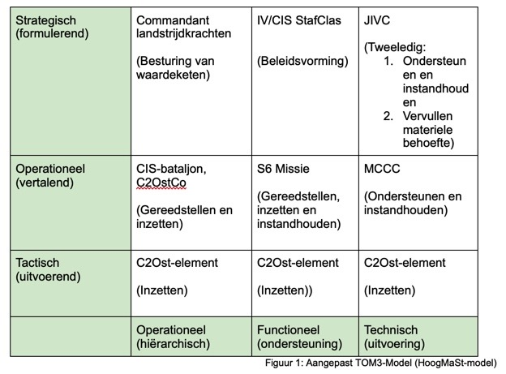

Marieke Pas

De tweede business opdracht die ik wil laten zien is het ontwerp van het Business Model Canvas (BMC). Het BMC is een tool om businessmodellen te beschrijven, vervolgens te analyseren en te ontwerpen. Het BMC bestaat uit negen bouwstenen die inzicht geven op alle onderdelen van het bedrijf. Daarom wordt ook weleens gezegd dat het BMC dient als een blauwdruk voor de onderneming.
Het BMC bestaat uit de volgende onderdelen (van der Linde, 2019):
Voor Defensie hebben wij ook het businessmodel canvas ingevuld. Deze staat hieronder afgebeeld.

Daarnaast hebben we ook het BMC ingevuld voor het Defensie onderdeel waar wij het project voor hebben gedaan, namelijk het C2OstCo (verbindingsdienst).

Op 2 oktober hebben wij een workshop verzorgd gekregen van Paul Kalis. Hij is COO van het bedrijf Qander. Hier was eerst het BMC besproken. Kalis heeft het BMC omgebouwd tot een TOM3-model. Dit was een manier om snel en gemakkelijk inzicht te krijgen in de operationele organisatie en de eventuele wijzigingen. Het was een 9-kwadrant dat zich focuste op 3x3 vlakken, namelijk:
Wij vonden dit model zo mooi, dat wij besloten om dit model ook te gaan gebruiken in onze business case van Defensie. Echter bleek dat het model niet een-op-een toepasbaar was op Defensie. Daarom hebben wij het model een beetje omgebouwd. Hieronder is het resultaat te zien.
Om dit TOM3-model te kunnen invullen, is er gekozen om een value chain van Defensie op te stellen. Dat hebben wij gedaan samen met de opdrachtgevers.

Operationeel - operationeel (CIS-eenheden & C2OstCo)
Op basis van orders van de commandant landstrijdkrachten zijn de CIS-eenheden en het C2OstCo verantwoordelijk voor het vervullen van alle taken, bevoegdheden en verantwoordelijkheden die de lijnverantwoordelijkheid met zich meebrengt. Zij moeten ervoor zorgen dat op tactisch niveau het installeren van computernetwerken mogelijk is en dat dit onder alle omstandigheden blijft werken. Het C2OstCo levert daarmee een cruciale bijdrage aan een solide kennisbasis van en regie over de C2Ost-keten.
Tactisch - operationeel (LAN- en SatComgroepen)
De LAN- en SatCom-groepen zijn met name verantwoordelijk voor de daadwerkelijk installeren van communicatienetwerken en alles wat daarbij komt kijken bij militaire operaties en civiele overheidstaken. Binnen de value chain vervullen zij de laatste stap van waardetoevoeging, namelijk inzetten.
Strategisch-functioneel (IV/CIS StafClas)
Alle taken, bevoegdheden en verantwoordelijkheden van het IV&CIS binnen de C2Ost-keten worden vervuld vanuit een stafverantwoordelijk. Dit betekent dat de afdeling IV&CIS een adviserende rol heeft en behartigd hiermee de belangen van het CLAS. Daarnaast stelt de afdeling IV&CIS de randvoorwaarden en de CLAS-brede normering vast voor de C2Ost-capaciteiten op het gebied van opleiden, trainen, gereedstellen en inzet (Persoonlijke communicatie, M. Kroon, 14 oktober 2020). Hierdoor kan er gezegd worden dat de afdeling IV&CIS binnen de value chain ondersteunen en instandhouden. Het ondersteunen doen ze door middel van advies en het instandhouden door middel van de randvoorwaarden stellen.
Operationeel-functioneel (S6 Missie)
De voornaamste verantwoordelijkheid van de S6 is het coördineren/instandhouden van alle communicatie en informatiesystemen, informatievoorziening en -management en informatiebeveiliging (IBEV). Het S6 is verantwoordelijk voor het opstellen van de ‘groene” informatievoorzieningen op missies zodat, het C2OstCo hier de juiste middelen voor kan leveren. De “groene” netwerken zijn de netwerken die worden opgesteld op missie. Daarmee vervult de S6 het onderdeel ondersteunen en instandhouden uit de value chain.
Tactisch-functioneel (C2Ost-element: C2Ostgroep/LANgroep en WAN-middelen)
De LAN-groep en WAN-middelen (waaronder SatCom) vervullen net als de LAN- en SatComgroepen de laatste waardetoevoeging uit de value chain. Zij zijn dus verantwoordelijk voor het de daadwerkelijke inzet van de communicatienetwerken en alles wat daarbij komt te kijken, dit doen zij zowel bij militaire operaties en civiele overheidstaken.
Strategisch - technisch (JIVC)
Het JIVC houdt zich bezig met het coördineren van systeemgericht onderhoud binnen de C2Ost-keten en tussen de diverse onderhoudsbedrijven. Zo wordt ook informatieontwerp, informatiearchitectuur, informatietechnologie, - beheer - en management verzorgt door het JIVC. Zo wordt bij technische problemen, die het MCCC niet opgelost krijgt, naar het JIVC geëscaleerd (persoonlijke communicatie, M. Kroon, 16 december 2020). JIVC is onderdeel van de DMO en speelt daarmee ook een rol in de materiële behoefte vervulling, op het gebied van IT, binnen Defensie. Hierdoor kan het JIVC onderverdeeld worden in twee hoofdtaken binnen de value chain, namelijk het instandhouden en onderhouden, door middel van support bij technische problemen, en de vervulling van de materiële behoefte.
Operationeel - Technisch (MCCC)
Wanneer er bij operaties en trainingen bepaalde problemen binnen de netwerken optreden, dient het MCCC als eerste hulplijn. Over het algemeen gaat dit al over “back-office” problemen in de software (persoonlijke communicatie, R. Jansen, 17 december 2020). Hierdoor kan gezegd worden dat het MCCC onder het instandhouden van het inzetten valt.
Tactisch - technisch (C2OstCo-elementen: C2Ostgroep/LANgroep en WAN-middelen)
De LAN-groep en WAN-middelen (waaronder SatCom) vervullen net als de LAN- en SatComgroepen de laatste waardetoevoeging uit de value chain. Zij zijn dus verantwoordelijk voor het de daadwerkelijke inzet van de communicatienetwerken en alles wat daarbij komt te kijken, dit doen zij zowel bij militaire operaties en civiele overheidstaken.
Meer weten over ons project? Klik dan hier.